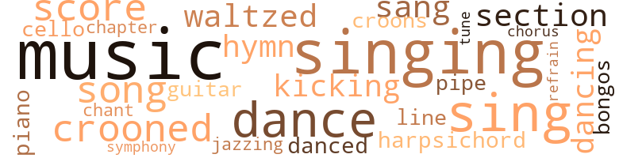
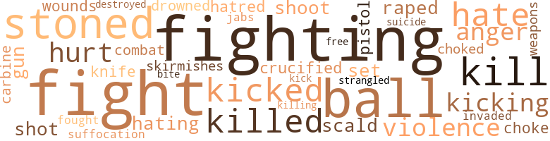

Messenger (The), by Wright, Charles (1964)
67 music-related terms matched in this text.
Most frequent terms in this topic: music (10); singing (7); dance (5); sing (4); crooned (3)
bongo.n.01
Definition: a small drum; played with the hands
| word | sentence |
|---|---|
| bongos | Nearby , a group of Puerto Rican boys played bongos . |
cello.n.01
Definition: a large stringed instrument; seated player holds it upright while playing
| word | sentence |
|---|---|
| cello | I began to doze and then Shirley 's delicate , long hands clawed up and down my back like a bow on a taut cello . |
chant.n.01
Definition: a repetitive song in which as many syllables as necessary are assigned to a single tone
| word | sentence |
|---|---|
| chant | My clasped hands were sweaty ; I dug my nails hard into the palms of my hands , as I continued to listen to Grandma 's low chant : " Father , Father , there is so little time left . |
chapter.n.01
Definition: a subdivision of a written work; usually numbered and titled
| word | sentence |
|---|---|
| chapter | She solicits for every known and unknown charity , and I know she has been with her chapter seven years . |
chorus.n.01
Definition: any utterance produced simultaneously by a group
| word | sentence |
|---|---|
| chorus | The woman sang the verse and then the rest of the congregation took up the chorus and the sweating fat man showed that the organ was meant not only for cathedrals . |
croon.v.01
Definition: sing softly
| word | sentence |
|---|---|
| croons | " Mama 's love , " Claudia croons . |
| crooned | " Grandma , Grandma , " I crooned , rocking her in my arms , hoping she did not note a change on my smiling face . |
| crooned | " Charles , pet , " Mrs. Lee crooned imploringly , and held up her empty champagne glass . |
| crooned | Mrs. Lee crooned . |
dance.n.01
Definition: an artistic form of nonverbal communication
| word | sentence |
|---|---|
| dance | The baby 's mother does a little hop and skipping dance , laughing , her huge , cat-shaped eyes zero in on an approaching sailor . |
| dance | I was think - ing about this when Jim said , " Laura , why do n't you and Charles dance ? " |
| dance | " I like a slow dance , " I said . |
dance.v.03
Definition: skip, leap, or move up and down or sideways
| word | sentence |
|---|---|
| danced | The roller piano tinkled merrily with barrel house music and Miss Sally danced around the room , a hop and skip , cooing like a drunken scarecrow . |
| dancing | " Listen to him , will you ? " she said , her eyes dancing merrily as her work plan developed in her mind . |
| dance | " I 'd much rather dance with you , Jim , " Laura said smiling . |
| dance | I watched them dance without really moving across the floor . |
| dancing | Mrs. Lee , an aging , ageless coquette , dressed in gold and lavender tea gowns , matching ribbon in her hair , dancing through an army of Puerto Rican gigolos , small pretty young men , manicured like dolls . |
guitar.n.01
Definition: a stringed instrument usually having six strings; played by strumming or plucking
| word | sentence |
|---|---|
| guitar | I 'm buying a guitar on time . |
harpsichord.n.01
Definition: a clavier with strings that are plucked by plectra mounted on pivots
| word | sentence |
|---|---|
| harpsichord | We made small talk for an hour amid the cool tones of a harpsichord playing on an old Atwater Kent phonograph . |
hymn.n.01
Definition: a song of praise (to God or to a saint or to a nation)
| word | sentence |
|---|---|
| hymn | Grandma prayed first and her voice was like a peaceful hymn : " Dear Heavenly Father , again you 've spared one of your humble servants to bend on their knees before thee . |
| hymns | He thinks it is something to worship , to sing wordless hymns about . |
jazz.v.01
Definition: play something in the style of jazz
| word | sentence |
|---|---|
| jazzing | Then she started jazzing me - huddling close , her long thief 's hand lunging for my head as if trying to pull out a hunk of hair . |
kick.v.04
Definition: kick a leg up
| word | sentence |
|---|---|
| kicking | " Twenty bucks , " he said , kicking his foot against the steps . |
| kicking | I picked up my bags and followed Grandma inside , kicking the door shut . |
music.n.01
Definition: an artistic form of auditory communication incorporating instrumental or vocal tones in a structured and continuous manner
| word | sentence |
|---|---|
| music | The roller piano tinkled merrily with barrel house music and Miss Sally danced around the room , a hop and skip , cooing like a drunken scarecrow . |
| music | Stark white , store - front Negro churches with holy roller music . |
| music | We blow our own trumpets though we al - ways swear the music is coming from another horn . |
| music | The bedside radio was playing early morning jazz and she kept time with the music , snapping her fingers . |
| music | The lunatic music continues to scream from the bars . |
| music | In a country noted for its wealth , the mass music is not even hybrid corn . |
| music | The radio music is smooth now , sentimental , semi-classic in the popular vein . |
| Music | Music for those poignant American Saturday nights , for those quiet American Sunday after - noons , music something like a golden bell , promis - ing that tomorrow will be better . |
| music | Music for those poignant American Saturday nights , for those quiet American Sunday after - noons , music something like a golden bell , promis - ing that tomorrow will be better . |
| music | The party had turned into a free-for-all ; I could hear their voices wild above the music , searching for that crazy kick that would still the fears , confusion , and the pain of being alive on this early August morn - ing . |
| music | These dirty , white-walled rooms , the mixed cheap furniture , the decayed scent of this old mid-town brownstone , the constant hum of voices , music , and impatient traffic which comes up from the street - what do they have to do with me ? |
piano.n.01
Definition: a keyboard instrument that is played by depressing keys that cause hammers to strike tuned strings and produce sounds
| word | sentence |
|---|---|
| piano | The roller piano tinkled merrily with barrel house music and Miss Sally danced around the room , a hop and skip , cooing like a drunken scarecrow . |
pipe.n.04
Definition: a tubular wind instrument
| word | sentence |
|---|---|
| pipe | Quiet , turned out in Ivy League garb , usually with a pipe and mustache . |
refrain.n.01
Definition: the part of a song where a soloist is joined by a group of singers
| word | sentence |
|---|---|
| refrain | " Yes , " cried the refrain , " he hears me . |
score.n.02
Definition: a written form of a musical composition; parts for different instruments appear on separate staves on large pages
| word | sentence |
|---|---|
| score | " What was the Met 's score ? " he asked . |
| score | The first score only whets her appetite . |
| score | I 've got to get my nerves together and make a score . |
section.n.01
Definition: a self-contained part of a larger composition (written or musical)
| word | sentence |
|---|---|
| section | I donned my only good suit , white shirt , dark silk tie , picked up the Sunday New York Times classified section , and made it . |
| section | It was a cross section of America . |
sing.v.02
Definition: produce tones with the voice
| word | sentence |
|---|---|
| sing | Grandma sug - gested she sing at the Hughes Chapel Methodist Church until she got her voice back in shape . |
| sang | I sang at the Blue Room in KC . |
| sings | " ' Drown in my own tears , ' Ray Charles sings . |
| singing | Silently we 'd listen to the changing of the guards , cursing up at the motor pool , and the peasants singing down the hill , starting for the Seoul markets before the hot sun and heavy front - line GI traffic blocked the dusty roads . |
| sing | He thinks it is something to worship , to sing wordless hymns about . |
| sing | A tall dark young woman rose and with head lifted high , hands clasped , and the most serene expression I had seen on a face in a long time , opened her mouth and began to sing , " Just a Closer Walk With Thee . " |
| sang | The woman sang the verse and then the rest of the congregation took up the chorus and the sweating fat man showed that the organ was meant not only for cathedrals . |
| singing | She began singing in a haunting , quivery , little girl 's voice . |
| sings | " One of these days , you gon na die , pretty baby " a voice sings mockingly from the jukebox of the bar on the ground floor . |
| sing | " Let 's sing ' Nearer My God to Thee ' , " Claudia said with great dignity . |
singing.n.01
Definition: the act of singing vocal music
| word | sentence |
|---|---|
| singing | Claudia , chained to the organ , composing his first drunken opera in English , singing at the top of his voice , " Oh , my most noble love , return . . . . |
| Singing | Singing a timeless song . |
| singing | Tonight I finished taking my shower at eight - o'clock , stepped from the bathroom nude , singing happily , and encountered a freckled , baby-faced sailor who was lumbering up the stairs . |
| singing | I found myself singing in a small voice . |
| singing | Just then Big Daddy came in from the bath - room singing , " I dreamed I had a reefer nine feet long , " and he made for Mrs. Lee , still singing , " I could smoke it from the bedroom clear out into the hall . " |
| singing | Just then Big Daddy came in from the bath - room singing , " I dreamed I had a reefer nine feet long , " and he made for Mrs. Lee , still singing , " I could smoke it from the bedroom clear out into the hall . " |
song.n.01
Definition: a short musical composition with words
| word | sentence |
|---|---|
| song | Singing a timeless song . |
| song | The truck driver 's four - letter morning song , " Get ya fuckin ' ass in ge-aar . " |
| song | And there was the lusty , muddy song of my childhood , the Missouri river , rushing to join the Mississippi a hundred miles away in St. Louis . |
symphony.n.01
Definition: a long and complex sonata for symphony orchestra
| word | sentence |
|---|---|
| symphony | But after a while , I felt a certain violence hovering in the air , as if a great symphony of dark emotions was keyed , waiting for the maestro 's exploding baton . |
tune.n.01
Definition: a succession of notes forming a distinctive sequence
| word | sentence |
|---|---|
| line | The punch line made me feel as if I were about to be raped in Rockefeller Center . |
| tune | Now the question is , what caused a medium - sized , middle-aged man with thin brown hair to beat up a young woman who was telling his for - tune ? |
waltz.v.01
Definition: dance a waltz
| word | sentence |
|---|---|
| waltzed | I refused to take off my shirt and refused the cup of hot chocolate , and later at the library , Miss Sally cut me dead , waltzed past my table humming " Little Black Sambo . " |
| waltzed | The jeweled hands waltzed over the keys . |
75 violence-related terms matched in this text.
Most frequent terms in this topic: fighting (7); kill (4); ball (4); stoned (4); fights (4)
anger.n.01
Definition: a strong emotion; a feeling that is oriented toward some real or supposed grievance
| word | sentence |
|---|---|
| anger | " No , " I said slowly , trying to hold back my anger . |
| anger | My anger rose . |
bang.n.04
Definition: the swift release of a store of affective force
| word | sentence |
|---|---|
| kick | She is on an abstract kick . |
blister.v.02
Definition: subject to harsh criticism
| word | sentence |
|---|---|
| scald | This was followed by a great peal of laughter which could scald a sensi - tive heart . |
brawl.n.02
Definition: a noisy fight in a crowd
| word | sentence |
|---|---|
| free-for-all | The party had turned into a free-for-all ; I could hear their voices wild above the music , searching for that crazy kick that would still the fears , confusion , and the pain of being alive on this early August morn - ing . |
brush.n.06
Definition: a minor short-term fight
| word | sentence |
|---|---|
| skirmishes | There were occasional skirmishes , but the fighting was already petering out by the time we got to Korea and in July the truce came . |
carbine.n.01
Definition: light automatic rifle
| word | sentence |
|---|---|
| carbine | The last time I was picked up AWOL I was marched to the stockade with a guard punching a loaded carbine into my back . |
crucify.v.01
Definition: kill by nailing onto a cross
| word | sentence |
|---|---|
| crucified | " The Mets were crucified . " |
destroy.v.04
Definition: put (an animal) to death
| word | sentence |
|---|---|
| destroyed | It was like something ter - rible had happened to him once long ago that had destroyed his sense of being a man , but it did n't matter much anymore . |
drown.v.04
Definition: kill by submerging in water
| word | sentence |
|---|---|
| drowned | And then , all this suddenly is drowned out by the crude , imploring voice of a nightclub singer from down the street : " / wan na be loved . |
fight.n.02
Definition: the act of fighting; any contest or struggle
| word | sentence |
|---|---|
| fighting | As novice soldiers we talked very little of the fighting in Korea . |
| combat | We were combat construction en - gineers . |
| fighting | There were occasional skirmishes , but the fighting was already petering out by the time we got to Korea and in July the truce came . |
fight.n.05
Definition: a boxing or wrestling match
| word | sentence |
|---|---|
| fight | If you disagree on race relations with another Negro , well , you 're asking for a fight . |
| fights | I remember the fights at school about Lincoln . |
| fights | The fights would take place around election time , the man 's birthday , or when we were studying a particular period in American history . |
| fight | This was Saturday night , die time when the Negroes let their hair down , relax , get drunk , fight and grumble about Mr. White Man and the price of pork and eggs and the troubles of their cousins down south , knowing that , come Monday morning , it will all be the same . |
| fights | The gypsies are fine local color for his customers , but fights and cops are another story . |
| fights | There are fights with the kids . |
fight.v.02
Definition: fight against or resist strongly
| word | sentence |
|---|---|
| fighting | Shirley shot back , her voice fighting one of her terrible whimpers . |
| fighting | I looked forward to fighting , perhaps even to dying . |
| fought | Maxine and I fought all the way down on the Seventh Avenue local to South Ferry . |
| fight | One night Grandpa tried to fight with Grandma . |
| fighting | We have been fighting and making up for more than two years now . |
| fighting | They were fighting like crazy . |
| fighting | My folks are fighting worse than usual . |
gag.v.06
Definition: cause to retch or choke
| word | sentence |
|---|---|
| choke | " Child , " Bobby exclaims , popping his butter - bean eyes , " that is enough to choke a mule . " |
| choked | But she choked slightly and caught her breath . |
gun.n.01
Definition: a weapon that discharges a missile at high velocity (especially from a metal tube or barrel)
| word | sentence |
|---|---|
| gun | And my friends : a twenty-one gun salute to madness . |
hate.n.01
Definition: the emotion of intense dislike; a feeling of dislike so strong that it demands action
| word | sentence |
|---|---|
| hate | With the hate people vomit up in moments of weakness I said , " Look at me , white woman . |
| hatred | His blue eyes flamed with hatred and his face was very red . |
hate.v.01
Definition: dislike intensely; feel antipathy or aversion towards
| word | sentence |
|---|---|
| hating | Start hating the white people again . |
| hate | Only people who ca n't face life and hate themselves are bitter . |
| hate | How I hate that place . |
invade.v.01
Definition: march aggressively into another's territory by military force for the purposes of conquest and occupation
| word | sentence |
|---|---|
| invaded | Jim was open - ing another can of beer and looked up , frowning , as if we had invaded his privacy . |
jab.n.02
Definition: a quick short straight punch
| word | sentence |
|---|---|
| jabs | When I did not join in , there were sharp jabs in my ribs . |
kick.v.04
Definition: kick a leg up
| word | sentence |
|---|---|
| kicking | " Twenty bucks , " he said , kicking his foot against the steps . |
| kicking | I picked up my bags and followed Grandma inside , kicking the door shut . |
kick_back.v.02
Definition: spring back, as from a forceful thrust
| word | sentence |
|---|---|
| kicked | There was a blue-black mark on his right cheek , as if he had fallen against something or had been hit or kicked . |
| kicked | I kicked at the pile of dirty sheets and said bit - terly , " Can it . |
| kicked | Even Bruce kicked in ten bucks . |
kill.v.10
Definition: cause the death of, without intention
| word | sentence |
|---|---|
| killed | He was killed at prep school . " |
| killed | I have often won - dered if Mr. X killed himself . |
| kill | I 'd like to kill 'm all ! " |
| kill | " Yes , kill 'm , " I sneered . |
| kill | Did I want to kill those boys ? |
| killed | I think I killed somebody , " Alice gig - gled . |
| kill | " Did you kill any tigers in Africa ? " |
| killing | We are killing time . |
knife.n.02
Definition: a weapon with a handle and blade with a sharp point
| word | sentence |
|---|---|
| knife | " No knife , uh ? |
musket_ball.n.01
Definition: a solid projectile that is shot by a musket
| word | sentence |
|---|---|
| ball | He would have liked to take me on ; I seemed bright , on the ball . |
| balls | Look blank like a diddy bop , fake a cat walk , a sort of bounce on the balls of your feet . |
| ball | " Oh , child , I really had a ball last night . |
| ball | Jim has the lanky , awkward grace of a basket - ball player , a hyperborean face , and unbelievably burnished red-gold hair . |
| ball | We had one old ball . |
pain.v.02
Definition: cause emotional anguish or make miserable
| word | sentence |
|---|---|
| hurt | And you get hurt and mad as hell . |
| hurt | There ai n't nothing that can really hurt you . |
pistol.n.01
Definition: a firearm that is held and fired with one hand
| word | sentence |
|---|---|
| pistol | One little boy , with space helmet and Davy Crockett tee-shirt , aimed his yel - low plastic water pistol at me and shouted , " Hey you ! |
rape.v.01
Definition: force (someone) to have sex against their will
| word | sentence |
|---|---|
| raped | The punch line made me feel as if I were about to be raped in Rockefeller Center . |
shoot.v.02
Definition: kill by firing a missile
| word | sentence |
|---|---|
| shot | He looked down at me , took the carnation from his lapel , threw it at my feet , and shot an explosion of French at me . |
| shoot | I got it bad once in the arm and they had to shoot me in the feet . " |
sic.v.01
Definition: urge to attack someone
| word | sentence |
|---|---|
| Set | I remember driving down the short main street of one Texas town and reading a sign : " Nigger Do n't Let The Sun Set On You In This Town . " |
sting.n.03
Definition: a painful wound caused by the thrust of an insect's stinger into skin
| word | sentence |
|---|---|
| bite | I 'll shave here and then we 'll get a bite to eat . |
stone.v.01
Definition: kill by throwing stones at
| word | sentence |
|---|---|
| stoned | If I worked with these slobs , I would be stoned from nine to five , I thought . |
| Stoned | Stoned junkies have that same cocky air . |
| stoned | Claudia , the Grand Duchess , stoned to the gills , wearing skin-tight , pale blue slacks , belly dances to the strains of Ella Fitzgerald 's " Smooth Sailing . " |
| stoned | There was horror in the knowledge that nothing was going to happen to me , that I was stoned on that frightening , cold level where everything is crystal clear . |
| stoned | " Child , your mother is stoned . |
strangle.v.01
Definition: kill by squeezing the throat of so as to cut off the air
| word | sentence |
|---|---|
| strangled | Sometimes I feel as if I 'm being strangled by the sophisticate scum of New York , by those mil - lions of feet making it toward Mr. Greenbacks and what it takes to be a ' smaht ' New Yorker . |
suffocation.n.01
Definition: killing by depriving of oxygen
| word | sentence |
|---|---|
| suffocation | It is strange that I had never felt the suffocation of this small room before ; as if shadows , objects , furniture were rising toward the ceiling and would explode into what had once been my life . |
suicide.n.01
Definition: the act of killing yourself
| word | sentence |
|---|---|
| suicide | Then there were the phone calls , as everything was ticking off nicely , as the market would soon close , as suicide left the air , as the brokers began to inhale the fickle scent of money again . |
violence.n.01
Definition: an act of aggression (as one against a person who resists)
| word | sentence |
|---|---|
| violence | But after a while , I felt a certain violence hovering in the air , as if a great symphony of dark emotions was keyed , waiting for the maestro 's exploding baton . |
| violence | Here the sense of violence was in abeyance . |
weapon.n.01
Definition: any instrument or instrumentality used in fighting or hunting
| word | sentence |
|---|---|
| weapons | On the Sunday afternoon when the ROK soldiers received word that they were no longer attached to American military units , they all got very drunk and tore up tents and equip - ment , shooting wildly with their weapons . |
wound.n.01
Definition: an injury to living tissue (especially an injury involving a cut or break in the skin)
| word | sentence |
|---|---|
| wounds | The wounds of my Missouri childhood were no worse than a sudden , sharp pain . |
61 religion-related terms matched in this text.
Most frequent terms in this topic: God (12); church (11); prayer (6); Jesus (3); worship (2)
cathedral.n.02
Definition: the principal Christian church building of a bishop's diocese
| word | sentence |
|---|---|
| cathedrals | The woman sang the verse and then the rest of the congregation took up the chorus and the sweating fat man showed that the organ was meant not only for cathedrals . |
chant.n.01
Definition: a repetitive song in which as many syllables as necessary are assigned to a single tone
| word | sentence |
|---|---|
| chant | My clasped hands were sweaty ; I dug my nails hard into the palms of my hands , as I continued to listen to Grandma 's low chant : " Father , Father , there is so little time left . |
church.n.02
Definition: a place for public (especially Christian) worship
| word | sentence |
|---|---|
| churches | Stark white , store - front Negro churches with holy roller music . |
| church | They drift away from home and from the church . |
| church | Nearby was a store-front church with a painted window resembling stained glass . |
| church | There was a crudely printed legend that said : the holiness sundown church , and in small letters : The right Rev. Stokes D. Mas field , Pastor . |
| church | There were about twenty adults in the church , more women than men , and about a dozen fidgeting children , and there was a sweet smell about the place but no flowers except a few gleaming , green leaves from the five-and-ten . |
| church | I only know that something stirred , touched me , and for a few minutes , sitting in that whitewash-walled , store-front church , listen - ing to that beautiful voice , I had a feeling that all was not lost . |
| church | The whites moved further out from town and the Negroes moved into the town to - gether with the church . |
| church | Soon the house was filled with neighbor women , church and sewing-circle friends of Grandma 's . |
| church | I sat in the rocking chair , reading the paper , and I remember hearing the church bell toll for morning worship and thinking : " Grandma is very quiet . |
| church | One cloudy afternoon that summer , the middle - aged minister of our church invited me into his small study in back of the church . |
church.n.04
Definition: the body of people who attend or belong to a particular local church
| word | sentence |
|---|---|
| Church | Grandma sug - gested she sing at the Hughes Chapel Methodist Church until she got her voice back in shape . |
| Church | The Red Dog Cafe , the Royal movie house , and the Hughes Chapel Methodist Church ( named after a great , great uncle who was a famous Missouri Negro preacher ) . |
| church | One cloudy afternoon that summer , the middle - aged minister of our church invited me into his small study in back of the church . |
| church | He does n't want to visit his father 's grave tomor - row and he is debating if he should go to church Sunday , that is , if he does n't get on a rip-roaring drunk Saturday night . |
curate.n.01
Definition: a person authorized to conduct religious worship
| word | sentence |
|---|---|
| pastor | The pastor looked up , nodded , and I sat down in a folding chair near the door . |
| pastor | I went up , shook the pastor 's hand , and gave him a dollar . |
deity.n.01
Definition: any supernatural being worshipped as controlling some part of the world or some aspect of life or who is the personification of a force
| word | sentence |
|---|---|
| divinity | Bruce , the divinity student of soothing tones and quiet beliefs , stormed into my place at four this morning , dead drunk . |
eden.n.01
Definition: any place of complete bliss and delight and peace
| word | sentence |
|---|---|
| heaven | I did not cry either because they had already told me death was a long , long sleep and you did not wake until you got to heaven . |
episcopalian.n.01
Definition: a member of the Episcopal church
| word | sentence |
|---|---|
| Episcopalian | Evidently Bruce was off his Episcopalian kick , at least for the evening . |
god.n.03
Definition: a man of such superior qualities that he seems like a deity to other people
| word | sentence |
|---|---|
| God | Silently I prayed to God to let whatever was happening end . |
| God | I hoped God heard his painful cries which keyed my taut nerves . |
| God | " For God 's sake , stop it ! |
| God | But too , Laura Vee can angrily shout , " By God , you treat me like I 'm white . " |
| God | " By God , jest like a rabbit . " |
| God | It seemed as if the ceiling was be - tween me and God . |
| God | This house of wor - ship is open twenty-four hours a day like the eyes of God . |
| God | " And I thank God , dear sweet blessed Jesus . " |
| God | Now I do n't want you to think I 'm trying to force you into becoming a man of God . |
| God | It was as if God had suddenly opened His powerful hand on the world . |
| gods | I took her once to the Museum of Modern Art , but she was very hostile to the gods of Modern Art . |
| God | " Let 's sing ' Nearer My God to Thee ' , " Claudia said with great dignity . |
| God | " Nearer my God to Thee . . . . |
hell.n.01
Definition: any place of pain and turmoil
| word | sentence |
|---|---|
| hell | Fags giving off an aura of wealth are often nothing more than glori - fied office boys , struggling like hell for the privilege of living in a walkup on the eastside . |
hymn.n.01
Definition: a song of praise (to God or to a saint or to a nation)
| word | sentence |
|---|---|
| hymn | Grandma prayed first and her voice was like a peaceful hymn : " Dear Heavenly Father , again you 've spared one of your humble servants to bend on their knees before thee . |
| hymns | He thinks it is something to worship , to sing wordless hymns about . |
imitation.n.01
Definition: the doctrine that representations of nature or human behavior should be accurate imitations
| word | sentence |
|---|---|
| imitation | I was too afraid to scream , but I twisted and turned on that large bed , a Hollywood bed with an imitation ivory-and - leather headboard and with brass nails . |
jesus.n.01
Definition: a teacher and prophet born in Bethlehem and active in Nazareth; his life and sermons form the basis for Christianity (circa 4 BC - AD 29)
| word | sentence |
|---|---|
| Jesus | I remember finally a bearded man with a tar - nished silver crown who said he was the son of Jesus and a woman in a man-tailored suit , built like a boxer , saying : " Come unto me , son . |
| Jesus | " Jesus Christ , " I exclaimed , stunned . |
| Jesus | I ask this in your name , through Jesus Christ Our Lord . |
jew.n.01
Definition: a person belonging to the worldwide group claiming descent from Jacob (or converted to it) and connected by cultural or religious ties
| word | sentence |
|---|---|
| Jew | Troy would read a French or Chinese newspaper ; I 'd read the Jew - ish Daily Forward . |
| Jew | As I was going down the steps a Jew in a pre-Warsaw suit was coming up , mopping his lined red face . |
messiah.n.01
Definition: any expected deliverer
| word | sentence |
|---|---|
| Christ | " Jesus Christ , " I exclaimed , stunned . |
| Christ | I ask this in your name , through Jesus Christ Our Lord . |
muslim.n.01
Definition: a believer in or follower of Islam
| word | sentence |
|---|---|
| Muslims | " Child , those were Muslims 01 * something . |
prayer.n.01
Definition: the act of communicating with a deity (especially as a petition or in adoration or contrition or thanksgiving)
| word | sentence |
|---|---|
| prayer | She looked up at me and then bowed her head as if in prayer . |
| prayer | This was poor Alice 's turf , and I thought of her and felt like saying a prayer . |
| prayer | But after that , pressure was put on me from all sides , in a hundred ways , and my nightly prayer was to be sent overseas . |
| prayers | " Sonny , do you still say your prayers ? " |
| prayer | It is a prayer meeting with a hand-clapping , tambourine ' Yes Lawd . ' |
| prayer | I entered to find this congregation in a silent prayer . |
| prayer | Perhaps it was remember - ing Wednesday prayer meeting and Grandma and Grandpa . |
preacher.n.01
Definition: someone whose occupation is preaching the gospel
| word | sentence |
|---|---|
| preacher | Shirley used to say I was saintly , I had missed my calling , I should become a preacher . |
saint.n.02
Definition: person of exceptional holiness
| word | sentence |
|---|---|
| angel | She works men with her sad angel 's face ; tears fall like soft rain from her eyes . |
| saint | I made breakfast for Grandma and then would get the morning paper , do some chores around the house , and some also for the neighbors , which made them buzz around me as if I were a saint . |
satan.n.01
Definition: (Judeo-Christian and Islamic religions) chief spirit of evil and adversary of God; tempter of mankind; master of Hell
| word | sentence |
|---|---|
| devil | This pad looks as if the devil just stormed through and Lve got exactly sixty-five cents . |
siren.n.01
Definition: a sea nymph (part woman and part bird) supposed to lure sailors to destruction on the rocks where the nymphs lived
| word | sentence |
|---|---|
| siren | The siren blows noon . |
temple.n.03
Definition: an edifice devoted to special or exalted purposes
| word | sentence |
|---|---|
| temples | For example : a young man , thirtyish , medium build , thrush-brown hair thinning at the temples , very good nose and mouth , round horn-rimmed glasses , blue-and-white pin striped shirt ( very wrinkled , sleeves rolled back ) , maroon tie loosened at the collar , and charcoal gray trousers . |
worship.n.01
Definition: the activity of worshipping
| word | sentence |
|---|---|
| worship | He thinks it is something to worship , to sing wordless hymns about . |
| worship | I sat in the rocking chair , reading the paper , and I remember hearing the church bell toll for morning worship and thinking : " Grandma is very quiet . |